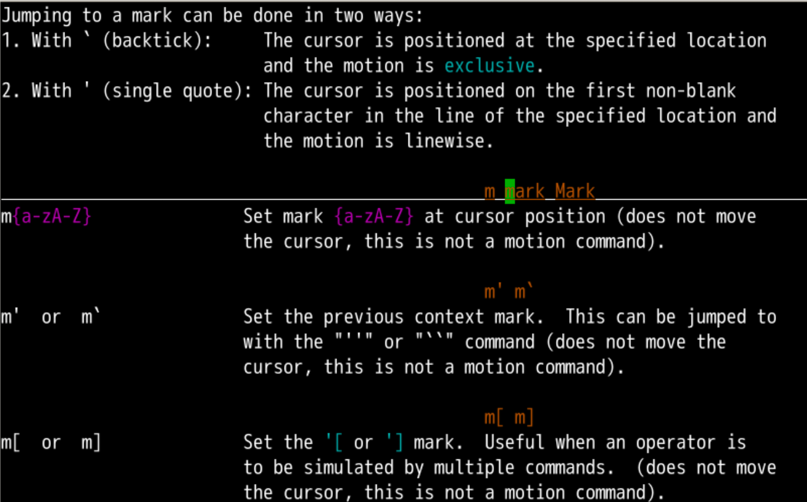
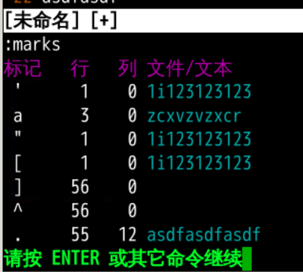
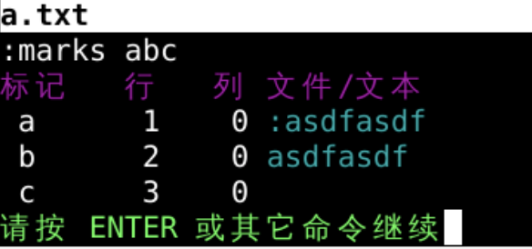
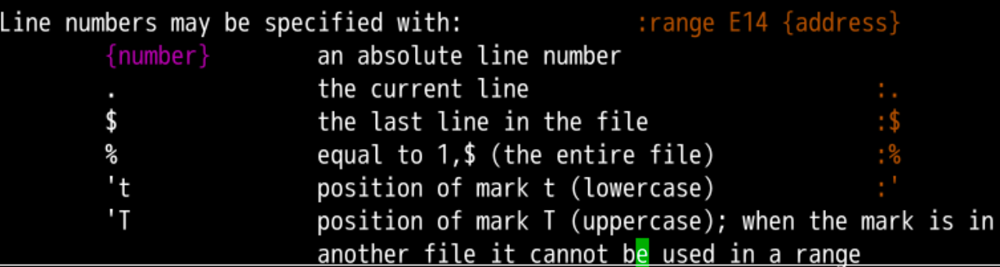
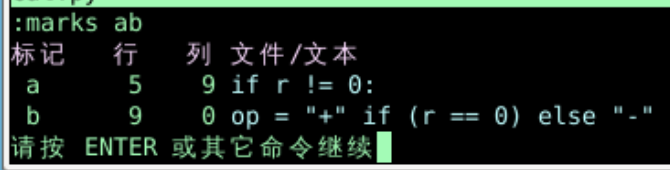
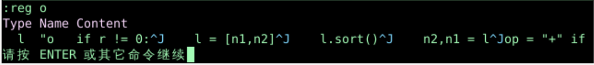
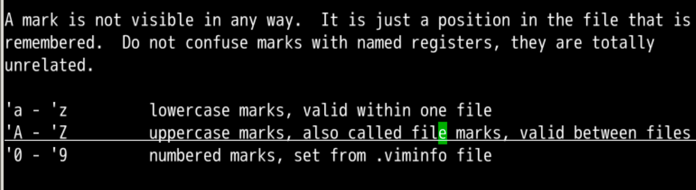

range、address我们可以做很多事情:441,3d3,$y%d o/oeasy/,$y5;/oeasy/daddressmark 标记mark标记 是什么意思？🤔:h mark 可以查看相应的细节
3 行 ma3 行 标记了一个 mark 叫做 a:marksmarkaa包括
:marks abc
a 的 marka
'ay 就是把a标记那行，放入默认寄存器:reg查看'a,'b就是把从a标记那行，到b标记那行'a,'b 相当于 3,5 是 {range}:'a,'by"o'a,'b 是 {range}y 是 yank复制o 是指定的寄存器

^J 是换行的标记
marks不可见，但是可以存储文件信息ma内部mA跨文件 定义 marks0-9 的数字标记~/.viminfo的配置文件中:marks a:delm(arks) a:delm(arks)!'[上一次修改或复制的第一行或第一个字符'] 上一次修改或复制的最后一行或最后一个字符'< 上一次在可视模式下选取的第一行或第一个字符'> 上一次在可视模式下选取的最后一行或最后一个字符'' 上一次跳转之前的光标位置'" 上一次关闭当前缓冲区时的光标位置'^ 上一次插入字符后的光标位置'. 上一次修改文本后的光标位置'( 当前句子的开头') 当前句子的结尾'{ 当前段落的开头'} 当前段落的结尾mark的定义和使用mb定义'b跳转marks查询:delm(arks)! 删除marks'a,'by从标记a的行复制到标记b的行'a,'bt.把从a到b的行复制当前行的下方'a,'bm$把从a到b的行移动到文档最后